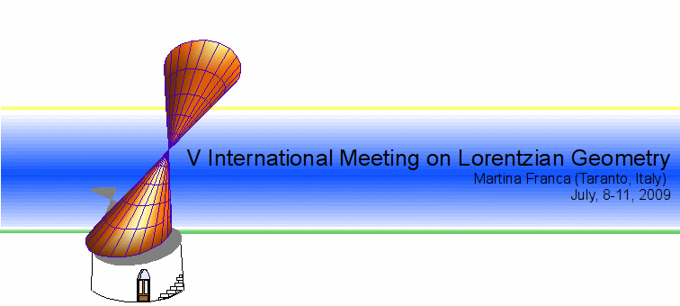

The conference will take place at the Hotel Villa Rosa in Martina Franca (Taranto, Italy).
Please contact the hotel directly for reservations, telling them that you are registering for the Lorentzian Geometry conference.
The phone number of the hotel is +390804838004
FAX: +390804307070
email: villarosahotel@virgilio.it
Hotel rates:
B&B single or double used as single € 71,00 B&B double
€ 95,00 HB single € 92,00 HB double € 68,50 p.p. FB single € 113,00 FB double € 89,50 p.p. extra meals € 21,00 p.p.
The hotel will continue to accept reservations on a space available basis.
There will be a shuttle service from/to Bari airport/conference hotel, available on July 7th and both in the afternoon of July 11th and on July 12th.
From the Bari Airport "Karol Wojtyla" take a taxi or a bus to the Central Train Station ("A. Moro" square); then take a train of the Ferrovie del Sud Est (on the time table, look for the trains from Bari Centro to Martina Franca). You can buy the ticket at the train station.
If you come by train, please email us your arrival and departure day, time and station. We will try to collect you from the train station.
16/04/09